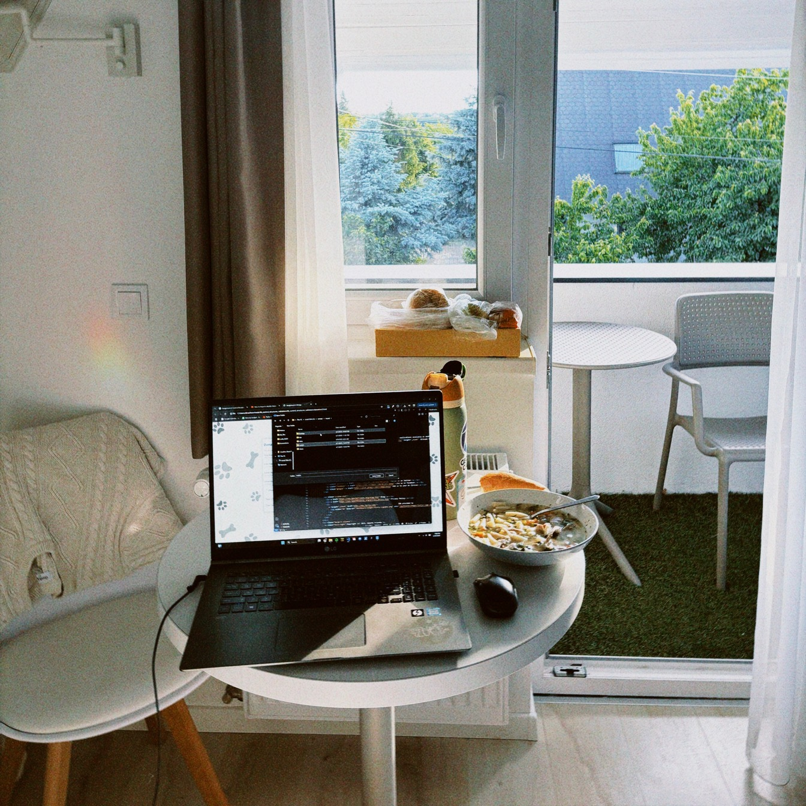
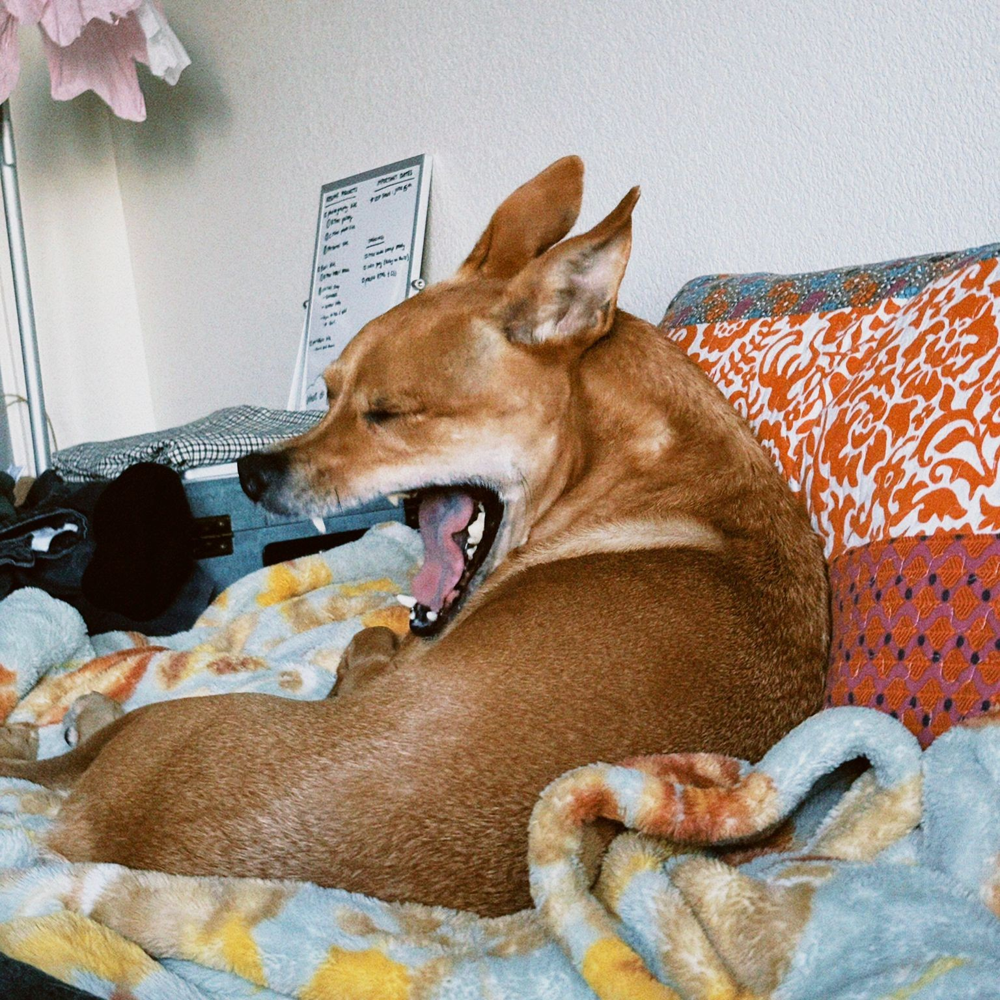
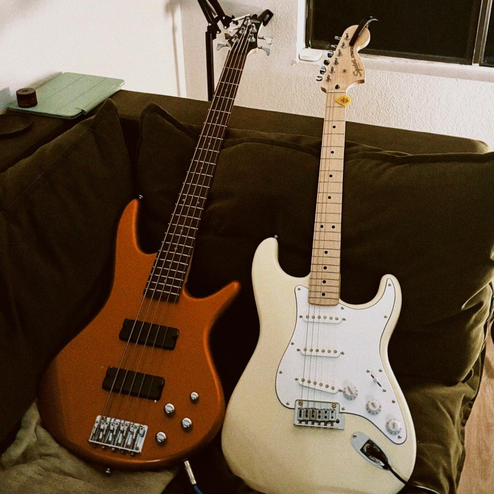

Interests
I am a life long student who is dedicated to learning about as
many hobbies as possible. And it's possible to collect quite a
few, give or take 27+ years to do it and hundreds of dollars
laterb. It turns out, the saying "the more you know, the less
you dont" proves true. Because I find a new craft, culture, and
interest to dive into almost daily. Maybe out of boredom, or a
stroke of insanity that I was born into (thank you mom and dad),
I’ve taught myself a plethora of different crafts including but
not limited to: crochet, jewelry making, surfing, design
posters, guitar playing, writing music, rollerblading,
photography, painting, ... you get the idea.
The more that I learn, the more I wanted there to be a way to
show off these skills. For someone to maybe learn from me, or to
be inspired to try something new, or to just be entertained for
a bit. I welcome it all!
And the best way to share ideas with others in the year 2025?
Put in online! Hence the skill of web development joins in. You
can find more about that in the PROJECTS page.

Sometimes, all you need are the essentials.

My dog Teddo is always with me while I work.

Any spare time I get, I try to practice my bass.